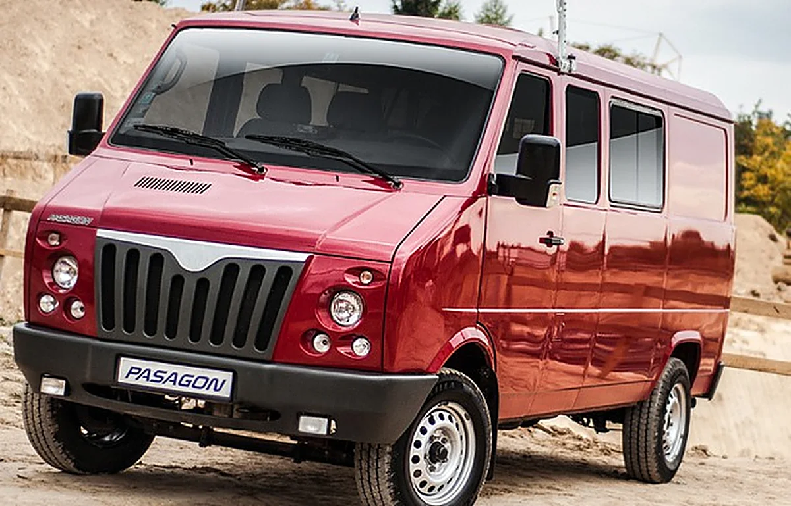

Części zamienne
Pełny asortyment do samochodów dostawczych i specjalnych produkcji krajowej: Honker, Lublin, Żuk, Tarpan, a także Iveco, Fiat Ducato, Land Rover i Gazela. Silniki VM Motori i Andoria.
- sprzedaż hurtowa dla hurtowni i warsztatów
- sklep przy ul. Traugutta 2 w Lubinie
- obsługa klientów z całej Polski